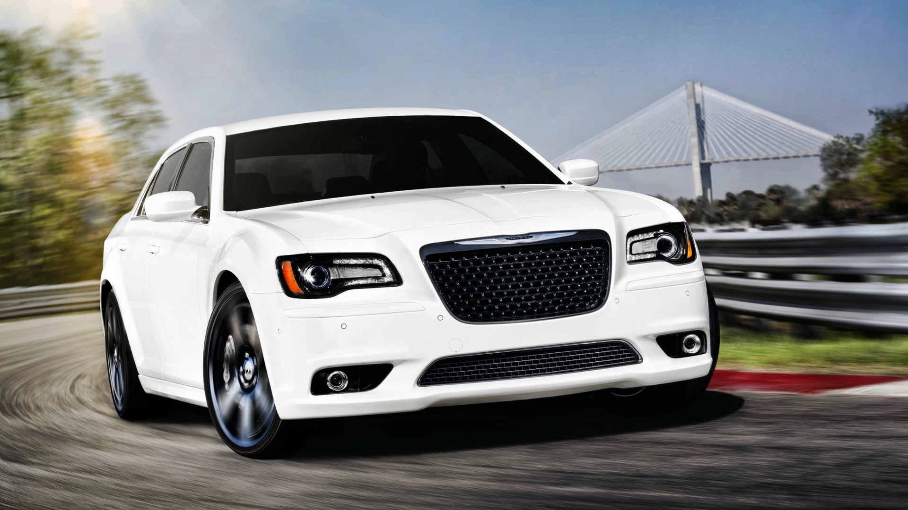

Welcome to the Chrysler 300
Here, we celebrate the timeless elegance, power, and luxury of this
iconic vehicle. Whether you're a longtime fan or just discovering its
allure, our site offers an in-depth look at the Chrysler 300's stunning
design, impressive performance, and innovative features. Join us as we
explore what makes this car a standout in the world of automotive
excellence, from its bold exterior to the luxurious interior.
What to expect:
On this site, you’ll find three key sections that dive deeper into what
makes the Chrysler 300 exceptional. In the
Design & Performance page, explore the bold
exterior, luxurious interior, and powerful performance that have defined
this model over the years. The
Features page
highlights the cutting-edge technology, safety, and comfort that make the
Chrysler 300 a favorite among drivers. Whether you're a fan of its legacy
or its innovation, each section offers insights into why this car
continues to be admired.